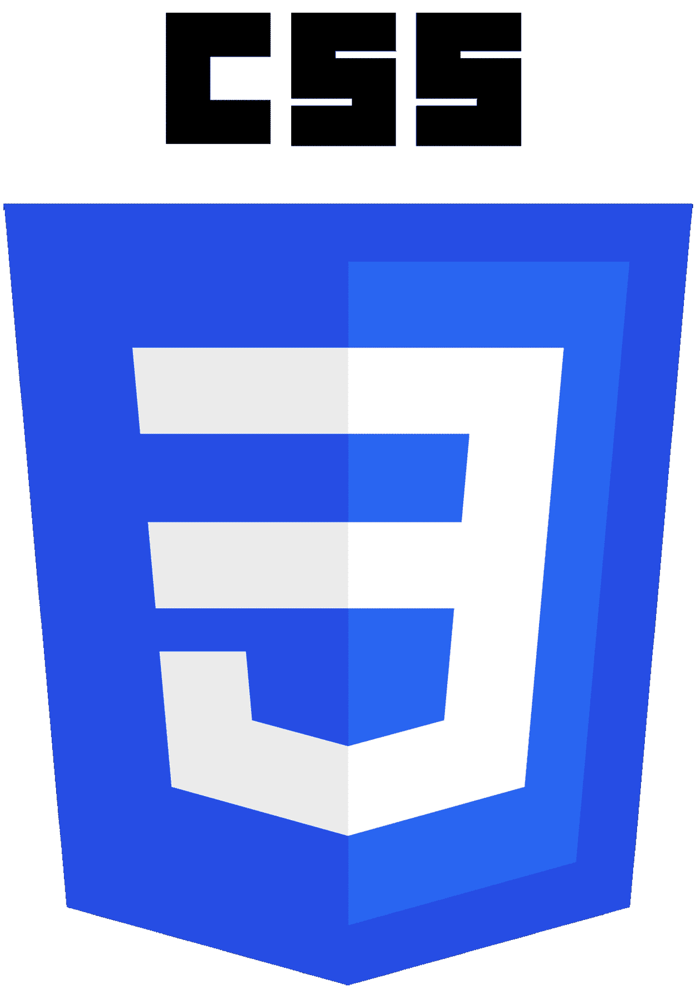
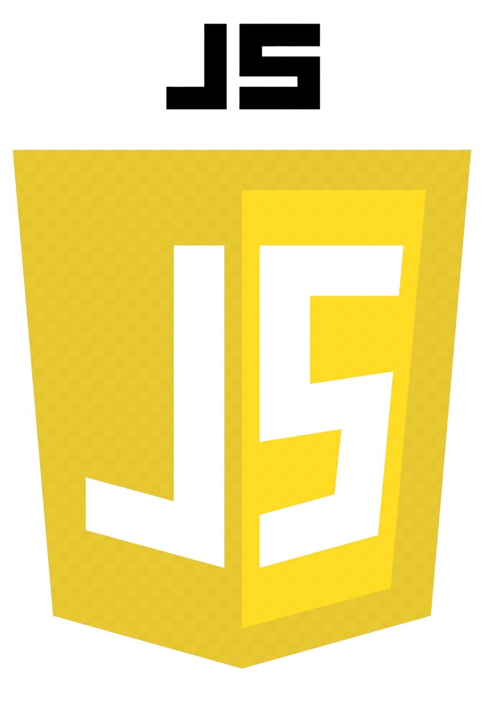
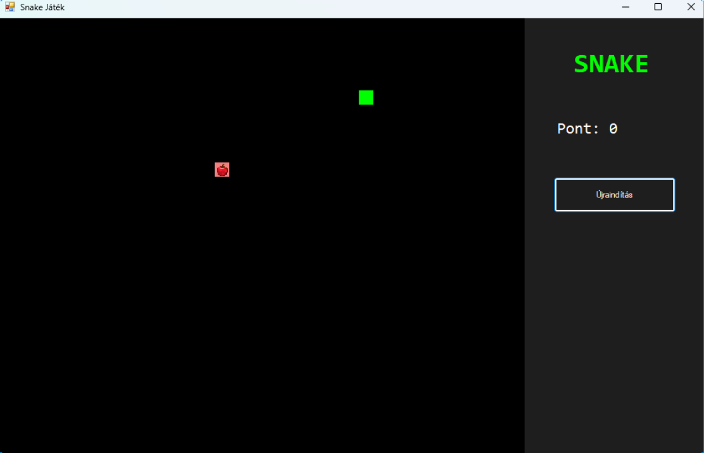
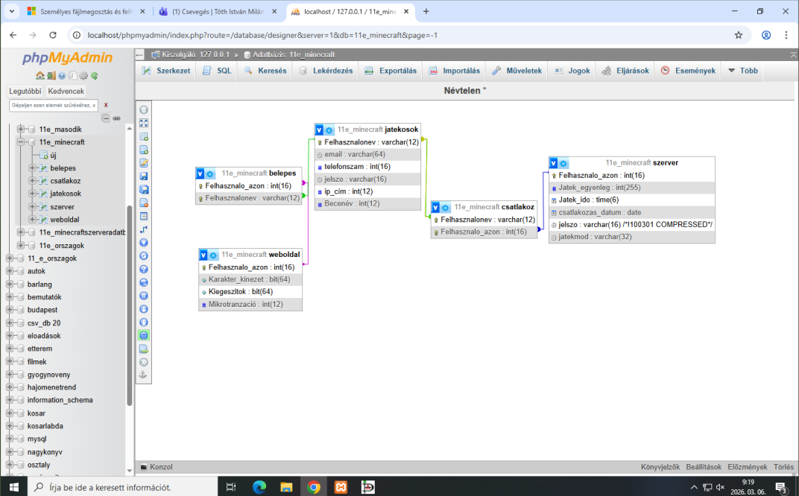
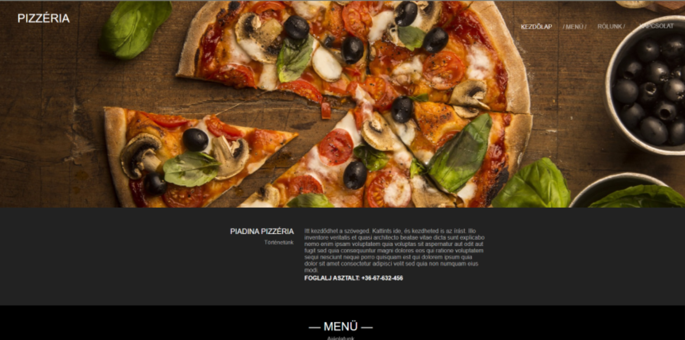

Bemutatkozás
Tóth István Milán vagyok, junior webfejlesztő és szoftverfejlesztő és tesztelő tanuló. Érdekel a weboldalak készítése, a programozás és az adatbázisok kezelése.
Tanulmányaim során HTML, CSS, JavaScript, Python, SQL és Git használatával készítettem több kisebb projektet.
Készségek
HTML

CSS

JavaScript
Python
SQL
Git
Projektek
SNAKE játék

Egy klasszikus Snake játék C# nyelven. A játékos egy kígyót irányít a billentyűzet segítségével, miközben almákat gyűjt.
Minecraft szerver SQL

Az adatbázis egy Minecraft szerver adatainak kezelésére szolgál. Tárolja a játékosok adatait, a be- és kijelentkezéseket, a játékidőt és egyenleget, valamint a kapcsolódó adatokat.
Pizzéria weboldal

Egy reszponzív pizzéria weboldal, amelynek célja az étterem bemutatása és az étlap megjelenítése. Az oldal több különböző tartalmi részt tartalmaz.